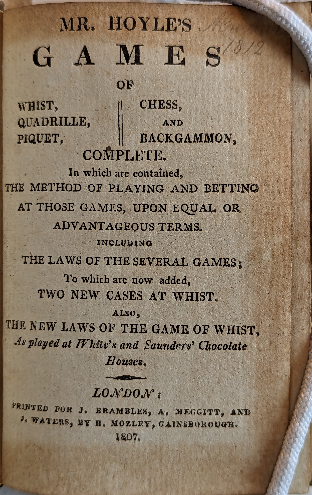

A Descriptive Bibliography of Edmond Hoyle
Copyright © 2014-26 by David Levy
(page updated 2024-10-10)User Guide
Games.3.R.2
Mr. Hoyle's Games, printed for J. Brambles et al, by H. Mozley, London reprint of third edition, 1807.
 |
Title: | MR. HOYLE'S | GAMES | OF | [3 lines to left of double rule] WHIST, | QUADRILLE, | PIQUET, | [3 lines to right of double rule] CHESS, | AND | BACKGAMMON, | COMPLETE. | In which are contained, | THE METHOD OF PLAYING AND BETTING | AT THOSE GAMES, UPON EQUAL OR | ADVANTAGEOUS TERMS. | INCLUDING | THE LAWS OF THE SEVERAL GAMES; | To which are now added, | TWO NEW CASES AT WHIST. | ALSO, | THE NEW LAWS OF THE GAME OF WHIST, | As played at White's and Saunders' Chocolate | Houses. | [short rule] | LONDON: | PRINTED FOR J. BRAMBLES, A. MEGGITT, AND | J. WATERS, BY H. MOZLEY, GAINSBOROUGH. | 1807. |
| Collation: | 18o: A–C6 E–Q6 R8 [$½ signed]; 98 leaves, pp. [1–3] 4–87 [88] 89–109 [110] 111–140 [141] 142–154 [155] 156–195 [196] |
| Contents: | Signature (Page) Reference | Contents | Signature (Page) Reference | Running Titles |
| A1r (1) | title | |||
| A1v (2) | blank | |||
| A2r–I2r (3–87) | ‘[oxford rule] | A SHORT TREATISE | ON THE GAME OF | WHIST. | [...]’ | A2v–I2r (4–87) | ‘WHIST.’ | |
| I2v–L1r (88–109) | ‘[oxford rule] | A | SHORT TREATISE | ON THE | GAME OF QUADRILLE; | SHOWING | The odds of Winning or Losing most Games | that are commonly Played, either by Calling | a King, or by Playing Sans Prendre. | TO WHICH ARE ADDED, | THE LAWS OF THE GAME. | [...]’ | I3r–L1r (89–109) | ‘QUADRILLE.’ | |
| L1v–N4v (110–140) | ‘A | SHORT TREATISE | ON THE | GAME OF | PIQUET; | DIRECTING, | With moral Certainty, how to discard any | Hand to Advantage, by showing the Chances | of taking in any one, two, three, four, or | five certain Cards. | Computations for those who Bet their Money | at the Game. | ALSO, | THE LAWS OF THE GAME. | TO WHICH ARE ADDED, | SOME RULES AND OBSERVATIONS FOR | PLAYING WELL AT CHESS. | [...]’ | L2r–N4v (111–140) | ‘PIQUET.’ | |
| N5r–O5v (141–154) | ‘SOME | RULES AND OBSERVATIONS | FOR | PLAYING WELL AT CHESS. | [...]’ | N5v–O5v (142–154) | ‘CHESS.’ | |
| O6r–R7r (155–193) | ‘A | SHORT TREATISE | ON THE GAME OF | BACK-GAMMON, | CONTAINING, | A Table of the thirty-ſix Chances, with directions how | to find out the Odds of being hit, upon ſingle or | double Dice. | Rules whereby a Beginner may, with due attention to | them, attain playing it well. | The ſeveral Stages for carrying your Men home, in | order to loſe no Point. | How to find out who is forwardeſt to win a Hit. | Caſes ſtated for Back-Games, with directions how to | play for one. | Caſes ſtated, how to know when you may have the bet-|ter of ſaving a Gammon by running. | Variety of Caſes of Curioſity and Inſtruction. | The Laws of the Game. | [...]’ | O6v–R8r (156–195) | ‘BACK-GAMMON.’ | |
| R7v–R8r (194–195) | ‘TWO NEW CASES AT WHIST. | [...] | [colophon]’ | |||
| R8v (196) | blank |
| Publisher: | “J. Brambles”, “A. Meggitt”, “J. Waters” |
| Printer: | Henry Mozley (colophon) |
| References: | Horr 681, Jessel 826, Rather 92 |
| Colophon: | ‘Printed by H. Mozley, Gainſborough.’ |
| Copies Seen: | O [3843 g.3]; OCl [789.87H G7L]; Levy [0085] |
| Other Copies: | NN [MZ (Hoyle. Games of whist, etc. 1807)]; NNPM [PML 88132] |
| Notes: | A reprint of Games.3, the "twelfth" edition (1760), without the updates from Games.4, the "thirteenth" edition (1763). Nor did it comtain any of the post-Donaldson improvements.The printer, Henry Mozley, appears to be the son of the Henry Mozley who published Beaufort.2 (1788). |